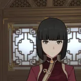
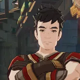
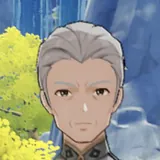

Chương Đệm · Màn I
Phong Khởi Hạc Quy
Nhiệm vụ Ma Thần — Liyue
Nhân vật xuất hiện
 Nhân vật chính · Nhà Lữ HànhLumineNhà Lữ Hành đến từ thế giới khác. Bị vị thần lạ mặt phong ấn và cướp mất người anh song sinh, cô bắt đầu hành trình đi tìm Bảy Vị Thần của Teyvat.
Nhân vật chính · Nhà Lữ HànhLumineNhà Lữ Hành đến từ thế giới khác. Bị vị thần lạ mặt phong ấn và cướp mất người anh song sinh, cô bắt đầu hành trình đi tìm Bảy Vị Thần của Teyvat. Bạn đồng hànhPaimonĐược Lumine cứu khỏi chết đuối hai tháng trước, Paimon tự nhận làm người dẫn đường cho cô. Hay ăn, hay nói, và rất ghét bị gọi là “thực phẩm dự trữ”.
Bạn đồng hànhPaimonĐược Lumine cứu khỏi chết đuối hai tháng trước, Paimon tự nhận làm người dẫn đường cho cô. Hay ăn, hay nói, và rất ghét bị gọi là “thực phẩm dự trữ”.- Đệ tử của Lưu Vân Tá Phong Chân QuânShenheCô gái tóc trắng được Lumine giúp thoát khỏi đám lừa đảo ở Cảng Liyue. Lớn lên cùng tiên nhân nhưng là người phàm, mang Bùa Chú Tiên Gia đến cho Ningguang và giúp Lumine trong cuộc thi trùng tu Quần Ngọc Các.
- Diễn viên nhạc kịch nổi tiếng của LiyueYun JinĐến tham gia cuộc thi để hỏi Ningguang về sân khấu cho vở kịch “Thần Nữ Hủy Diệt” của cha mình. Đề nghị nhóm Lumine và Beidou lập đội cùng giành ba suất đầu.
 “Thiên Quyền” của Thất Tinh LiyueNingguangTổ chức cuộc thi tìm nguyên liệu để trùng tu Quần Ngọc Các, đồng thời dùng việc này để dụ Beisht, kẻ đi theo Ma Thần Lốc Xoáy, ra khỏi mặt biển.
“Thiên Quyền” của Thất Tinh LiyueNingguangTổ chức cuộc thi tìm nguyên liệu để trùng tu Quần Ngọc Các, đồng thời dùng việc này để dụ Beisht, kẻ đi theo Ma Thần Lốc Xoáy, ra khỏi mặt biển.- Thủ lĩnh đội thuyền Nam Thập TựBeidouMang đến một khối Minh Hà Phù Sinh Thạch, cùng Lumine và Yun Jin giành ba suất đầu của cuộc thi. Là người đã cảnh báo Ningguang về biến động dưới biển.
 Sư phụ của ShenheLưu Vân Tá Phong Chân QuânKể cho Lumine và Paimon nghe quá khứ của Shenhe, nhờ họ chăm sóc con bé, và âm thầm quan sát xem Ningguang có vượt qua được phong ba sắp tới không.
Sư phụ của ShenheLưu Vân Tá Phong Chân QuânKể cho Lumine và Paimon nghe quá khứ của Shenhe, nhờ họ chăm sóc con bé, và âm thầm quan sát xem Ningguang có vượt qua được phong ba sắp tới không.- Nhị thiếu gia Thương Hội Phi VânXingqiuChỉ cho nhóm Lumine động tiên của Minh Hải Thê Hà Chân Quân ở gần Ngoại Ô Li Sa, nơi có thể có Minh Hà Phù Sinh Thạch.
- Chủ Nhà Thuốc BubuBaizhuCho nhóm Lumine biết về Minh Hà Phù Sinh Thạch trong “Thất Tàng Sơn Kinh” và gợi ý đến Thương Hội Phi Vân hỏi thăm.
 “Ngọc Hành Tinh” của Thất Tinh LiyueKeqingChỉ huy Thiên Nham Quân, ra lệnh cho máy Guizhong kiểu mới khai hỏa vào Beisht.
“Ngọc Hành Tinh” của Thất Tinh LiyueKeqingChỉ huy Thiên Nham Quân, ra lệnh cho máy Guizhong kiểu mới khai hỏa vào Beisht.
Thư ký của Ningguang ở công trườngBaiwenNgười nhận và chấm nguyên liệu của cuộc thi trùng tu Quần Ngọc Các.
Thợ rèn tiệm Hàn Phong Thiết KhíLão ZhangNgười từng làm Lõi Thần Kỳ cho Ningguang, chỉ cho nhóm Lumine đi tìm Quặng Sắt Sao Vỡ và Bí Hoa Thạch.
Bạn thân của cha ShenheMingjunÔng lão ở ngôi làng bỏ hoang gần Thiên Hoành Sơn, nơi Shenhe sinh ra. Nhiều năm vẫn day dứt vì đã không ngăn được cha của Shenhe.- “Tàn Dư Lốc Xoáy”BeishtVợ của Osial, người cuối cùng đi theo Ma Thần Lốc Xoáy. Trồi lên từ biển khi Quần Ngọc Các bay lên.
- LKẻ bán tình báoLiu Mặt Sẹo và QiangHai gã lưu manh bám theo Shenhe đòi tiền, bị Thiên Nham Quân bắt đi.
Các phần
Toàn bộ lời thoại được lấy từ bản tiếng Việt chính thức của trò chơi. Ở những đoạn người chơi được chọn câu trả lời, truyện chọn một lựa chọn duy nhất.